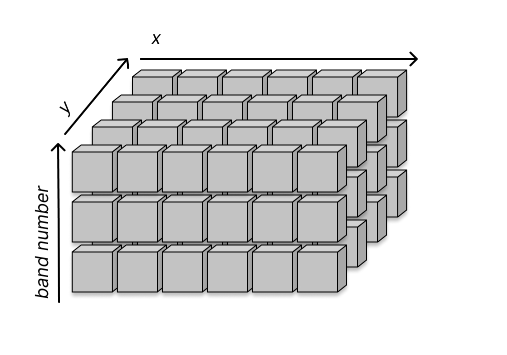
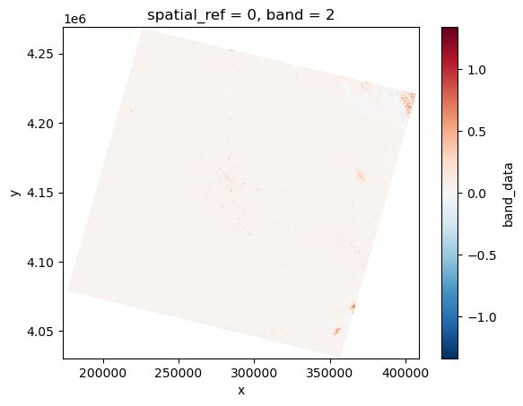
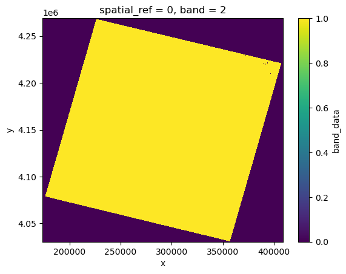
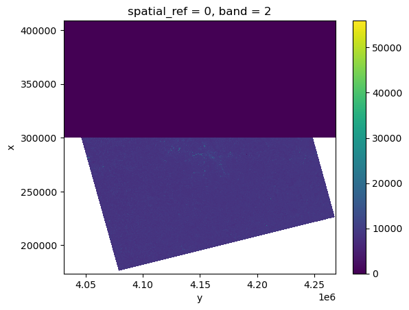
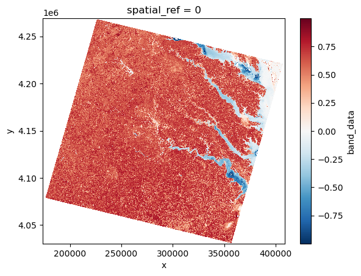
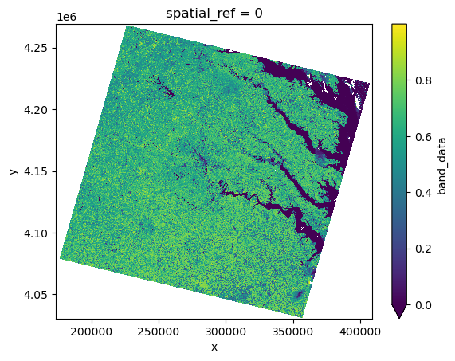
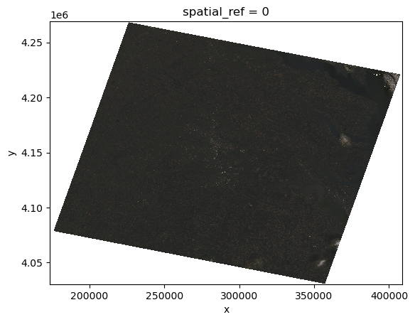

3.2 Starting Computations#
If working on Cryocloud use at least a 32GB instance to run this notebook
Lesson Content
Dataset
Some computation
Filtering and Masking values
Context#
Yesterday we explored the data structures that xarray uses to organize data. Today we are going to use those data structures to manipulate data!
import xarray as xr
import rioxarray
Dataset#
The dataset of the day is Landsat OLI. Accessed from https://earthexplorer.usgs.gov/. This is Collection 2 Level 2.
from pathlib import Path
import numpy as np
def preprocess_function(ds):
"""
This function assigns a new value to the `band` coordinate that corresponds
to the band number of in the filename.
"""
# Extract band number
filepath = Path(ds.encoding['source'])
band_str = filepath.stem.split('_')[-1]
# Assign as the coordainte
ds = ds.assign_coords(xr.Coordinates({"band": [int(band_str[1])]}))
return ds
landsat = xr.open_mfdataset(
'data/LC09_L2SP_015034_20250414_20250415_02_T1/LC09_L2SP_015034_20250414_20250415_02_T1_SR_B*.TIF',
concat_dim='band', combine='nested', preprocess=preprocess_function,
)
This dataset is a bit bigger than the one we worked with yesterday, so the calculations (especially plotting) will take a bit longer to run.
In the code above we opened all seven bands together. A simpler thing to do would be to open a single file at a time. An example of that is below.
band3 = xr.open_dataset(
'data/LC09_L2SP_015034_20250414_20250415_02_T1/LC09_L2SP_015034_20250414_20250415_02_T1_SR_B3.TIF',
)
Data Opening Check#
The first thing you always do when you open a data file is to check the contents and compare that to your expectation. Think of it like opening an unexpected package in the mail – you might have a guess what’s inside, but you need to get into it to look around and perhaps checke the receipt to be sure of what it is and where it came from.
In general, when opening a dataset you’ll always want to go through the same couple checks:
Data Opening Checklist
What variables or measurements are available in this dataset?
How is the dataset organized? What is the shape or size?
What spatial and/or temporal range does this dataset cover?
Do there appear to be any nodata values in this dataset?
Do the variables appear to have reasonable values?
Make the simplest plot possible of 1-2 variables. Does it match your expectations?
Let’s do these together now with this dataset. Going through these checks will use a many of the skills we learned in lesson 3.1.
#1: What variables or measurements are available in this dataset?
Let’s look at the xarray output:
landsat
<xarray.Dataset> Size: 2GB
Dimensions: (band: 7, y: 7951, x: 7841)
Coordinates:
* x (x) float64 63kB 1.737e+05 1.737e+05 ... 4.089e+05 4.089e+05
* y (y) float64 64kB 4.269e+06 4.269e+06 ... 4.031e+06 4.03e+06
spatial_ref int64 8B 0
* band (band) int64 56B 1 2 3 4 5 6 7
Data variables:
band_data (band, y, x) float32 2GB dask.array<chunksize=(1, 256, 256), meta=np.ndarray>It looks like this dataset has just one variable, called band_data. That’s not a super descriptive title, but we know from name of the data file that this dataset holds data for Surface Reflectance, which is a measure of how much light is reflected off the surface of the earth (or a cloud) and makes it back to the satellite sensor.
#2: How is the dataset organized? What is the shape or size?
This dataset has 3 dimensions: band, y, and x. It has 7 bands and about 8,000 values in the x and y directions.
While it’s not immediately obvious, the x and y dimensions are spatial dimensions, so we know that this dataset represents 7 spectral bands over some geographic area.

Note that there are a lot fewer data boxes in that conceptual drawing than in the actual dataset. We are working with much bigger data now, so a 7 x 7951 x 7841 cube would be much to big to draw. But conceptually notice we are working with a 3D dataarray that is organized by band number, x, and y.
#3: What spatial and/or temporal range does this dataset cover?
The spatial dimensions, x and y, are not written in latitude and longitude. They are written in what is called a UTM coordinate system. More detail about a UTM coordinate system can be found in lessons 4.2 and 4.4. For now just know that this data is organized geographically.
As for a temporal range, the filename gives us a hint that we are looking at a file captured on either April 14th or April 15th, 2025.
#4: Do there appear to be any nodata values in this dataset?
One way to check for nodata values is to look at a plot of the data. Let’s do that for just one band:
landsat.sel(band=2).band_data.plot()
<matplotlib.collections.QuadMesh at 0x7fb6fc9957f0>
Notice that we have data on the edges that represents nodata. That means we don’t have values for these areas. We can see those areas showing up as white on the plot above.
#5: Do the variables appear to have reasonable values?
Let’s check the minimum and maximum values for this dataset:
landsat.sel(band=2).band_data.min().load()
landsat.sel(band=2).band_data.max().load()
Surface reflectance should vary between 0 and 1… That’s odd, but we will come back to it later in the lesson.
#6: Make the simplest plot possible of 1-2 variables. Does it match your expectations?
We made a plot to answer question #4. A few things look off at this point, but that is good to know. We will revisit these oddities later in the lesson.
Since our dataset only has one variable in it let’s simplify things but using a DataArray for the rest of the lesson.
landsat = landsat.band_data
Now that we have gotten aquainted with our data we can move on to new Python topics for xarray.
Some Computation#
Let’s work for a while with just the second band.
band2 = landsat.sel(band=2).load()
band2
<xarray.DataArray 'band_data' (y: 7951, x: 7841)> Size: 249MB
array([[nan, nan, nan, ..., nan, nan, nan],
[nan, nan, nan, ..., nan, nan, nan],
[nan, nan, nan, ..., nan, nan, nan],
...,
[nan, nan, nan, ..., nan, nan, nan],
[nan, nan, nan, ..., nan, nan, nan],
[nan, nan, nan, ..., nan, nan, nan]], dtype=float32)
Coordinates:
* x (x) float64 63kB 1.737e+05 1.737e+05 ... 4.089e+05 4.089e+05
* y (y) float64 64kB 4.269e+06 4.269e+06 ... 4.031e+06 4.03e+06
spatial_ref int64 8B 0
band int64 8B 2
Attributes:
AREA_OR_POINT: PointLooking at the array output we can see those nodata areas noted above represented as nan on the array above.
Arithmetic#
You can add / subtract / multiply / divide a DataArray by another number. Let’s take a look at that using a single number in our dataset at index (5000, 5000).
band2.isel(x=5000, y=5000)
<xarray.DataArray 'band_data' ()> Size: 4B
array(8840., dtype=float32)
Coordinates:
x float64 8B 3.237e+05
y float64 8B 4.119e+06
spatial_ref int64 8B 0
band int64 8B 2
Attributes:
AREA_OR_POINT: Pointband2.isel(x=5000, y=5000) * 20
<xarray.DataArray 'band_data' ()> Size: 8B
array(176800.)
Coordinates:
x float64 8B 3.237e+05
y float64 8B 4.119e+06
spatial_ref int64 8B 0
band int64 8B 2Now I understand if you aren’t feeling wowed – we basically just multiplied one number times another number. But when you multiply a single number by a dataset xarray will do that multiplication for you across all the numbers in the dataset. Let’s look at an example of this with what is called the scale and offset values.
It is common in remote sensing that the data that is initially read from a dataset is not the true values of the data. The values in the data file are scalled and offset by a certain factor from their actual value. This is done in order to make data storage more efficient. Integer numbers are smaller to store than float numbers, if we store data as integers and use a scale value to multiply it back to its original value we save space on storage.
For Surface Reflectance in this version of Landsat the scale and offset values are:
Scale factor |
Offset |
|---|---|
0.0000275 |
-0.2 |
Now let’s apply these to our dataset:
band2_scaled = (band2 * 0.0000275) - 0.2
band2_scaled.plot()
<matplotlib.collections.QuadMesh at 0x7f2b5ee73190>

Notice the maximum and minimum values of the color bar: -1 to 1 is a pretty different range from the 10,000 to 50,000 that was plotted on the first plot.
Does -1 to 1 make sense as a value for surface reflectance? Surface reflectance is the fraction of incoming solar radiation that is reflected back to space. Surface reflectance is a fraction, so values usually range from 0 to 1, but atmospheric corrections or other retrieval algorithms can cause negative values, particuarly over water. In summary, yes, -1 to 1 makes much more sense for this dataset than 10,000 to 50,000.
🌀 More Info: Broadcasting during arithmetic
The reason that this works is because numpy (and therefore xarray) uses a technique called broadcasting. You can read more about it here
Aggregations#
There are a lot (a lot) of built in methods that manipulate data. Some common ones are:
Function |
Description |
|---|---|
|
Maximum |
|
Minimum |
|
Standard deviation |
band2.max()
<xarray.DataArray 'band_data' ()> Size: 4B
array(55950., dtype=float32)
Coordinates:
spatial_ref int64 8B 0
band int64 8B 2band2.min()
<xarray.DataArray 'band_data' ()> Size: 4B
array(1., dtype=float32)
Coordinates:
spatial_ref int64 8B 0
band int64 8B 2In an earlier lesson we talked about functions/methods as verbs and attributes as adjectives when describing a data object. The methods listed above are examples of these for xarray DataArray objects!
There are a lot of methods for DataArrays. One list (of many on the internet) is here.
Note
One way that programming langauges grow is when people build new tools by starting with the tools that someone else already built. This accelerates progress!
You’ll notice that the link above lists functions that are part of the numpy library. xarray builds on top of numpy, so we can use resources that others have made for numpy to help us with xarray. While not every numpy function, a lot of the numpy functions are available for xarray.
📝 Check your understanding
What is the mean value of the sst DataArray?
Reading documentation#
To practice looking at documentation, let’s look at the docs page for the xarray.DataArray.max() method.
We notice a few optional arguments - dim and axis. dim takes an integer as an argument and axis takes a string. Let’s try them out.
band2.max(axis=1)
<xarray.DataArray 'band_data' (y: 7951)> Size: 32kB
array([nan, nan, nan, ..., nan, nan, nan], dtype=float32)
Coordinates:
* y (y) float64 64kB 4.269e+06 4.269e+06 ... 4.031e+06 4.03e+06
spatial_ref int64 8B 0
band int64 8B 2band2.max(dim='x')
<xarray.DataArray 'band_data' (y: 7951)> Size: 32kB
array([nan, nan, nan, ..., nan, nan, nan], dtype=float32)
Coordinates:
* y (y) float64 64kB 4.269e+06 4.269e+06 ... 4.031e+06 4.03e+06
spatial_ref int64 8B 0
band int64 8B 2We see that when we use these arguments instead of smushing the all the data together and taking the maximum value, we are taking the maximum value along a particular axis of data. Whatever axis we specify in the argument disappears after we take the maximum.
Note
While we won’t cover it here, you can use this paradigm of applying a function on a full dataset or along an axis almost indefinetly in xarray. Even if the function you want to apply isn’t a built-in function (maybe it’s an algorithm you wrote yourself!), you can apply it using DataArray.reduce().
📝 Check your understanding
Look at the documentation page for the .std() function in xarray and the documentation page for .std() in numpy.
What does the function do? (Use the numpy page)
Name 1 argument to the function and describe what it does.
What type of object does the function return?
Filtering or masking values#
Let’s start by looking at how we use booleans with data arrays. We saw previously how we could take single values and compare them with comparisons.
# mask the values with ice or err set
7 < 10
True
x = 'hello'
x == 'hola'
False
Can we make boolean comparisons with xarray data? Turns out we can! We can use the same comparisons (>, <, ==, >=, <=), and it compares every value in the DataArray.
# import numpy as np
# np.printoptions(threshold=20)
# xr.set_options(display_expand_data=True)
band2.max()
<xarray.DataArray 'band_data' ()> Size: 4B
array(55950., dtype=float32)
Coordinates:
spatial_ref int64 8B 0
band int64 8B 2band2 > 0.6
<xarray.DataArray 'band_data' (y: 7951, x: 7841)> Size: 62MB
array([[False, False, False, ..., False, False, False],
[False, False, False, ..., False, False, False],
[False, False, False, ..., False, False, False],
...,
[False, False, False, ..., False, False, False],
[False, False, False, ..., False, False, False],
[False, False, False, ..., False, False, False]])
Coordinates:
* x (x) float64 63kB 1.737e+05 1.737e+05 ... 4.089e+05 4.089e+05
* y (y) float64 64kB 4.269e+06 4.269e+06 ... 4.031e+06 4.03e+06
spatial_ref int64 8B 0
band int64 8B 2What did we get? An array of the same size where each value is a boolean True/False telling us if the condition was true.
We can even use and and or like we talked about earlier in the week, but we have to change the syntax:
and ->
&or ->
|
(band2 > 0.6) & (band2 < 0.8)
<xarray.DataArray 'band_data' (y: 7951, x: 7841)> Size: 62MB
array([[False, False, False, ..., False, False, False],
[False, False, False, ..., False, False, False],
[False, False, False, ..., False, False, False],
...,
[False, False, False, ..., False, False, False],
[False, False, False, ..., False, False, False],
[False, False, False, ..., False, False, False]])
Coordinates:
* x (x) float64 63kB 1.737e+05 1.737e+05 ... 4.089e+05 4.089e+05
* y (y) float64 64kB 4.269e+06 4.269e+06 ... 4.031e+06 4.03e+06
spatial_ref int64 8B 0
band int64 8B 2(band2 > 0.8).plot()
<matplotlib.collections.QuadMesh at 0x7f2b4d16c690>

📝 Check your understanding
Create a plot that shows where sst is above 10 degrees.
Masking values with DataArray.where()
band2.where(band2 > 0)
<xarray.DataArray 'band_data' (y: 7951, x: 7841)> Size: 249MB
array([[nan, nan, nan, ..., nan, nan, nan],
[nan, nan, nan, ..., nan, nan, nan],
[nan, nan, nan, ..., nan, nan, nan],
...,
[nan, nan, nan, ..., nan, nan, nan],
[nan, nan, nan, ..., nan, nan, nan],
[nan, nan, nan, ..., nan, nan, nan]], dtype=float32)
Coordinates:
* x (x) float64 63kB 1.737e+05 1.737e+05 ... 4.089e+05 4.089e+05
* y (y) float64 64kB 4.269e+06 4.269e+06 ... 4.031e+06 4.03e+06
spatial_ref int64 8B 0
band int64 8B 2
Attributes:
AREA_OR_POINT: PointMasking values with xr.where()
Another common kind of data manipulation is to want to give data cells new values based on their old values. For that we will use xr.where().
xr.where() takes at least three arguments:
xr.where(condition, true, false)
conditionshould be any type of boolean statement like above that returns a bunch of True/Falsetrueis what xarray should put into any place that has a True value.
Optionally, you can also add a third argument describing what would happen should happen to the places where the condition array is False.
In this example, we see that anywhere that sst is greater than 20, xarray will put the word “warm”. All other places it will put the word “cold”.
xr.where(band2 >= 0.3, "bright", "dark")
<xarray.DataArray 'band_data' (y: 7951, x: 7841)> Size: 1GB
array([['dark', 'dark', 'dark', ..., 'dark', 'dark', 'dark'],
['dark', 'dark', 'dark', ..., 'dark', 'dark', 'dark'],
['dark', 'dark', 'dark', ..., 'dark', 'dark', 'dark'],
...,
['dark', 'dark', 'dark', ..., 'dark', 'dark', 'dark'],
['dark', 'dark', 'dark', ..., 'dark', 'dark', 'dark'],
['dark', 'dark', 'dark', ..., 'dark', 'dark', 'dark']], dtype='<U6')
Coordinates:
* x (x) float64 63kB 1.737e+05 1.737e+05 ... 4.089e+05 4.089e+05
* y (y) float64 64kB 4.269e+06 4.269e+06 ... 4.031e+06 4.03e+06
spatial_ref int64 8B 0
band int64 8B 2import numpy as np
xr.where(band2 < 0.3, np.nan, band2)
<xarray.DataArray 'band_data' (y: 7951, x: 7841)> Size: 249MB
array([[nan, nan, nan, ..., nan, nan, nan],
[nan, nan, nan, ..., nan, nan, nan],
[nan, nan, nan, ..., nan, nan, nan],
...,
[nan, nan, nan, ..., nan, nan, nan],
[nan, nan, nan, ..., nan, nan, nan],
[nan, nan, nan, ..., nan, nan, nan]], dtype=float32)
Coordinates:
* x (x) float64 63kB 1.737e+05 1.737e+05 ... 4.089e+05 4.089e+05
* y (y) float64 64kB 4.269e+06 4.269e+06 ... 4.031e+06 4.03e+06
spatial_ref int64 8B 0
band int64 8B 2Notice that the conditional doesn’t have to be data from the original dataset - it could be one of its coordinates, or even a totally different dataset of the same shape.
masked = xr.where(band2.x > 300_000, 0, band2)
masked.plot()
<matplotlib.collections.QuadMesh at 0x7f2b5e8f4690>

Putting it all together: Band Math#
One very common practice in remote sensing is what is called band math. Band math is when you take different bands from the same sensor and do arithmetic on them to get something new.
Each band from Landsat shows surface reflectance from a particular wavelength of light. See this reference.
We are going to calculated the Normalized Difference Vegetation Index or NDVI. NDVI tells us how about the amount of vegetation in our scene. NDVI uses two bands: A Red band and a near infrared band. First, let’s get these two bands from our landsat dataset.
First, let’s apply the scale and offset to our dataset:
landsat = landsat
landsat = (landsat * 0.0000275) - 0.2
Now let’s extract just the bands we want:
red = landsat.sel(band=4).load()
nir = landsat.sel(band=5).load()
Just to make sure everything is going smoothly, let’s make sure the values look reasonable:
red.min()
<xarray.DataArray 'band_data' ()> Size: 4B
array(-0.159135, dtype=float32)
Coordinates:
spatial_ref int64 8B 0
band int64 8B 4nir.min()
<xarray.DataArray 'band_data' ()> Size: 4B
array(-0.08461, dtype=float32)
Coordinates:
spatial_ref int64 8B 0
band int64 8B 5Recall that surface reflectance values should be between 0 and 1. We can see that a few negative values are in this dataset, so let’s mask them out.
red = red.where(red > 0)
nir = nir.where(nir > 0)
Now we are ready to use some band math and add full bands. The function for calculating NDVI is:
\( NDVI = \frac{NIR - Red}{NIR + Red}\)
So, we need to add, subtract, and divide bands to calculate NDVI. xarray lets us add or subtract whole bands together.
(nir - red) / (nir + red)
<xarray.DataArray 'band_data' (y: 7951, x: 7841)> Size: 249MB
array([[nan, nan, nan, ..., nan, nan, nan],
[nan, nan, nan, ..., nan, nan, nan],
[nan, nan, nan, ..., nan, nan, nan],
...,
[nan, nan, nan, ..., nan, nan, nan],
[nan, nan, nan, ..., nan, nan, nan],
[nan, nan, nan, ..., nan, nan, nan]], dtype=float32)
Coordinates:
* x (x) float64 63kB 1.737e+05 1.737e+05 ... 4.089e+05 4.089e+05
* y (y) float64 64kB 4.269e+06 4.269e+06 ... 4.031e+06 4.03e+06
spatial_ref int64 8B 0Let’s assign that to an output:
ndvi = (nir - red) / (nir + red)
#
There we have NDVI! But did it work? Let’s investigate by checking the maximum and minimum values.
ndvi.max()
<xarray.DataArray 'band_data' ()> Size: 4B
array(0.999817, dtype=float32)
Coordinates:
spatial_ref int64 8B 0ndvi.min()
<xarray.DataArray 'band_data' ()> Size: 4B
array(-0.99967253, dtype=float32)
Coordinates:
spatial_ref int64 8B 0Values range from -1 to 1. Looks good so far! How about making a plot?
ndvi.plot()
<matplotlib.collections.QuadMesh at 0x7f2b4d15c710>

Negative values are usually water, ice, and snow. Since those are rare in our scene we use the vmin argument to set the lowest color to 0. This helps us focus on the variability that is more common in our image.
ndvi.plot(vmin=0)
<matplotlib.collections.QuadMesh at 0x7f2b5f901950>

Do you recognize the location of the image above? What is that slightly darker patch in the middle of the image (about 280,000m on the x axis and \(4.15x10^6\)m on the y axis)?
Intermediate Example: Plotting a true color image#
First, normalize the values so they range from -1 to 1. Normalization is:
\(norm = \frac{value - min}{max - min}\)
where min and max are the minimum and maximum values for the whole band.
landsat_norm = (landsat - landsat.min(dim=['x', 'y'])) / (landsat.max(dim=['x', 'y']) - landsat.min(dim=['x', 'y']))
# option 2 - one band at a time
red = landsat.sel(band=4)
green = landsat.sel(band=3)
blue = landsat.sel(band=3)
# option 3 - if people know how to write functions they could write a function
# and apply it to all 3 bands
landsat_norm = landsat_norm.sel(band=[4, 3, 2]).load()
landsat_norm.sel(band=[4, 3, 2]).plot.imshow()
<matplotlib.image.AxesImage at 0x7f2b3c0e3010>

Sometimes xarray’s images can use a lot of memory, so if you are struggling with your kernel dying you can also try using the matplotlib library to plot the image:
from matplotlib.pyplot import imshow
imshow(np.transpose(landsat_norm.data, (1, 2, 0)))
landsat_norm.plot.imshow()
There is our true color image! It’s a big dark, which is due to the way that values are stored in the dataset that lowers the contrast. If making beautiful true color images is exciting to you, check out this NASA earth observatory blog post that talks about raising the contrast to make beautiful true color Landsat images.